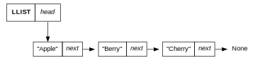

Runtime
When calculating the Big O notation for a particular algorithm, it’s necessary to consider the length of time it takes for the algorithm to run as the algorithm’s workload approaches infinity. You can think of the workload as the number of tasks required to complete a job. What determines the workload of figuring out whether your box of animal crackers contains an elephant?
The number of animal crackers in the box determines the workload of figuring out whether my box of animal cracters contains an elephant. Since we have to think pessimistically, the work will be O(n), where n = number of animal crackers in the box that we have to individually evaluate for elephantile elements.
Order the following runtimes in descending order of efficiency (that is, fastest runtimes first, slowest last) as n approaches infinity:
- O(log n)
- O(n2)
- O(n log n)
- O(n)
- O(2n) (i.e. 2 to the n-th power)
- O(1)
The runtimes, in order of fastest to slowest:
- Constant: O(1)
- Logarithmic: O(log n)
- Linear: O(n)
- Logarithmic: O(n log n)
- Quadratic: O(n^2)
- Exponential: O(2^n)
- Not listed, but worth noting: Factorial: O(n!) is the slowest!
Stacks and Queues
In the following cases, would a stack or queue be a more appropriate data structure?
- The process of loading and unloading pallets onto a flatbed truck
This is LIFO, which is a stack. To load, you put pallets in the order of 1, 2, 3, 4 (four is on top). To unload, you take it from the top: 4, 3, 2, then 1.
- Putting bottle caps on bottles of beer as they roll down an assembly line
This is a queue, since the first bottle on the assembly line gets a cap and then moves on first. (FIFO)
- Calculating the solution to this mathematical expression: 2 + (7 * 4) - (3 / 2)
Since the expressions that are usually evaluated first are properly contained in parentheses, this would be a queue where you evaluate first from left to right: 2 + (28) - (1.5) = 28.5
Describe two more situations where a queue would be an appropriate data structure.
- Traffic jam on 101: the first car behind the cause of the traffic jam (most likely a fender bender) gets to drive forward first.
- Waiting for a table at a restaurant that doesn't take reservations; you get a table when your name comes up on the list. (Let's temporarily ignore the logistics of different table and party sizes.)
Describe two more situations where a stack would be an appropriate data structure.
- Making naan (or pancakes or tortillas or waffles): When you make them, you put the first one you make on the bottom, then keep adding to the stack. When you serve it, you take from the top. LIFO.
- Dishes: When you wash dishes and put them away, you put them in the shelf from bottom to top. When you use them, you take the last one you put in first (top to bottom).
Linked Lists
Given the linked list below, which are the nodes? What is the data for each node? Where is the head? Where is the tail? (Please be as specific as possible — exactly which parts of the diagram correspond to each part? Arrows? Boxes? Text?)

The nodes are the three rectangles that contain .data and .next attributes (second row). The data for each node is a string containing "apple", "berry", and "cherry", respectively. The head is the node containing the data string "apple". The current tail is the node containing the data string "cherry". (Note: our linked list class doesn't appear to be officially tracking the tail.)
What’s the difference between doubly- and singly-linked lists?
Singly-linked lists provide connections between nodes via the .next attribute. Doubly-linked lists also provide connections via the .prev attribute, which offers another option for traversing the linked list (to work backwards, so to speak).
Why is it faster to append to a linked list if we keep track of the tail as an attribute?
If we keep track of the tail as an attribute, we don't have to traverse the linked list to find the tail every time in order to append. It's an awesome convenience.
Trees
Given the tree above, in what order would a Breadth First Search (BFS) algorithm visit each node until finding burrito (starting at food)? Just list the order of nodes visited; no need to recreate the state of the algorithm data in your answer.
- Start with [food]
- Not food, so add its children: [Italian, Indian, Mexican]
- Pop Italian (not it), so add its children: [Indian, Mexican, lasagna, pizza]
- Pop Indian (not it), so add its children: [Mexican, lasagna, pizza, tikka masala, saag]
- Pop Mexican (not it), so add its children: [lasagna, pizza, tikka masala, saag, burrito, tacos, enchiladas]
- Pop lasagna (not it); it's a leaf, so no children to add: [pizza, tikka masala, saag, burrito, tacos, enchiladas]
- Pop pizza (not it), so add its children: [tikka masala, saag, burrito, tacos, enchiladas, thin crust, Chicago-style, New York-style, Sicilian]
- Pop tikka masala (not it); it's a leaf, so no children to add: [saag, burrito, tacos, enchiladas, thin crust, Chicago-style, New York-style, Sicilian]
- Pop saag (not it); it's a leaf, so no children to add: [burrito, tacos, enchiladas, thin crust, Chicago-style, New York-style, Sicilian]
- YAY! WE FOUND BURRITO!!!
Given the tree above, in what order would a Depth First Search (DFS) algorithm visit each node until finding Chicago-style (starting at food)? Just list the order of nodes visited; no need to recreate the state of the algorithm data in your answer.
- Start with [food]
- Pop food (not it), so add its children: [Italian, Indian, Mexican]
- Pop Mexican (not it), so add its children: [Italian, Indian, burrito, tacos, enchiladas]
- Pop enchiladas (not it), has no children so down to: [Italian, Indian, burrito, tacos]
- Pop tacos (not it), has no children so down to: [Italian, Indian, burrito]
- Pop burrito (not it), has no children so down to: [Italian, Indian]
- Pop Indian (not it), so add its children: [Italian, tikka masala, saag]
- Pop saag (not it), has no children so down to: [Italian, tikka masala]
- Pop tikka masala (not it), has no children so down to: [Italian]
- Pop Italian (not it), so add its children: [lasagna, pizza]
- Pop pizza (not it), so add its children: [lasagna, Chicago-style, New York-style, Sicilian]
- Pop Sicilian (not it), has no children so down to: [lasagna, Chicago-style, New York-style]
- Pop New York-style (not it), has no children so down to: [lasagna, Chicago-style]
- YAY! FOUND CHICAGO-STYLE!
How is a binary search tree different from other trees?
Binary serach trees are different from other trees mainly because of the arrangement rules that dictate their creation. For example, most trees can branch out as-needed, but binary search trees can have at most two children (one left and one right child). This is to faciliate fast searching.